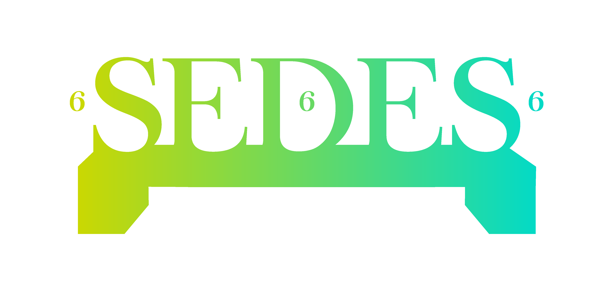

<ion-header>
  <ion-toolbar>
    <ion-buttons slot="start">
      <ion-menu-button></ion-menu-button>
    </ion-buttons>
    <ion-title>Profile</ion-title>
    <ion-buttons slot="end">
      <ion-button (click)="search()">
        <ion-icon name='search'></ion-icon>
      </ion-button>
      <ion-button (click)="logOut()">
        <ion-icon name='log-out'></ion-icon>
      </ion-button>
    </ion-buttons>
  </ion-toolbar>
</ion-header>

<ion-content>

    <ion-item>
               
    </ion-item>
</ion-content>
